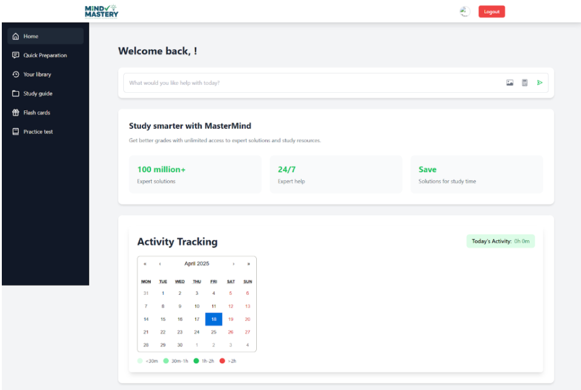
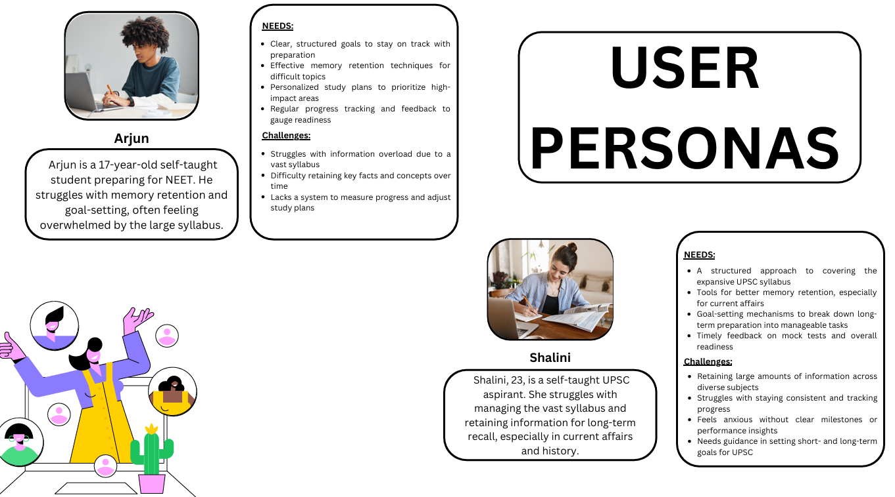
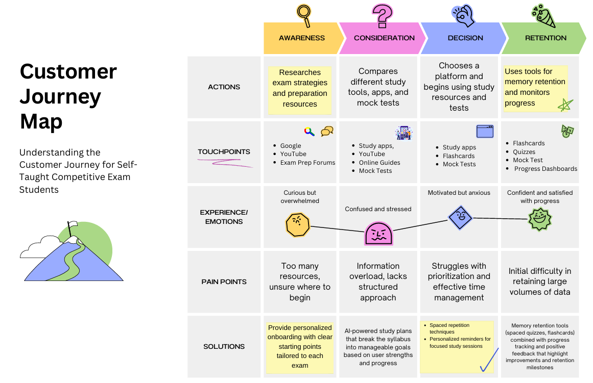
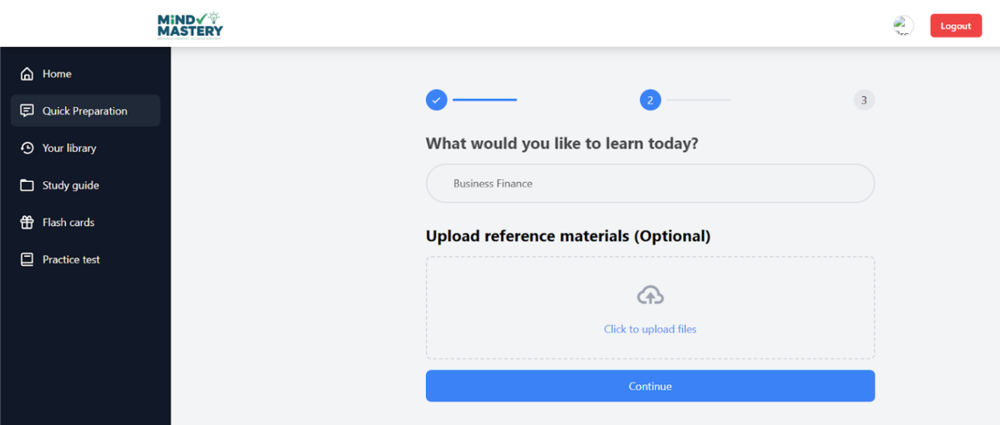
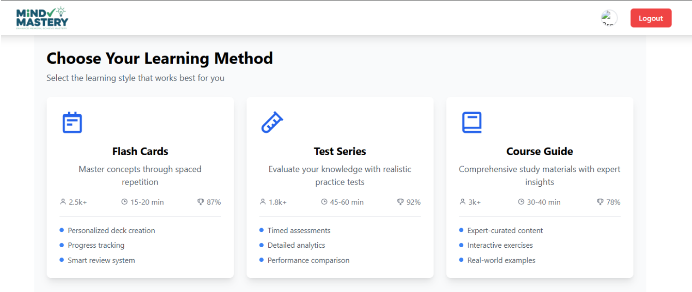

MindMastery – Personalized Learning & Memory Platform
An adaptive EdTech system that auto-generates personalized quizzes from PDFs and helps NEET/UPSC aspirants master large syllabi using spaced repetition and smart flashcards.

My Role
Product Strategy, ML Engineering
Category
Product Case Study
Duration
12 Weeks (2024)
Tools & Tech
Figma, Python, Qwen 2.5–7B, Spaced Repetition
The Problem / Objective
NEET and UPSC aspirants study from massive, 800–1200+ page PDFs. Their review workflow relies heavily on passive re-reading or manual flashcard creation, which is slow and inefficient. They struggle with:
• Long-term retention
• Structured preparation
• Progress tracking
• Consistent review cycles
MindMastery solves this by generating personalized quizzes directly from PDFs using LLM-powered chunking and spaced repetition.
Discovery & Research
To validate the problem, we conducted user research with 50+ aspirants.
Key Insight: The biggest pain point wasn't lack of content — it was lack of *efficient active recall*. Students needed structured review, not more reading.
- Interviewed 50+ NEET/UPSC aspirants
- Compared tools like Anki, Toppr, and Unacademy
- Mapped personas and user journeys highlighting high-friction areas


Solution & Design Process
The solution is an adaptive platform that:
• Extracts content from PDFs
• Applies semantic chunking
• Auto-generates quizzes using local LLMs
• Tracks retention and schedules reviews with spaced repetition


Architecture & Technical Challenges
The platform involves PDF parsing, semantic chunking, LLM-based question generation, spaced repetition scheduling, and analytics dashboards.
Technical Challenge: Simple PDF splitting failed. Implementing semantic chunking (context-aware block detection) significantly improved LLM output quality and accuracy of generated questions.
Analysis & Strategic Recommendations
Strategic next steps include gamification, community decks, and school/academy partnerships.
Recommendation: Introduce community-created flashcard decks and AI-powered learning streaks to boost engagement and retention.
Results & Impact
Validated strong user need and performance improvement.
50+
Aspirants interviewed
90%
Reduced effort in creating study material
Qwen 7B
Local LLM for private quiz generation
75%
Improved reporting efficiency
Learnings & Next Steps
Lesson Learned: LLM output quality heavily depends on chunking. Context-preserving splits yield far better quiz accuracy than uniform slicing.
Next steps include:
• Gamification & leaderboards
• Community-driven decks
• Mobile app version
• B2B integrations with coaching centers